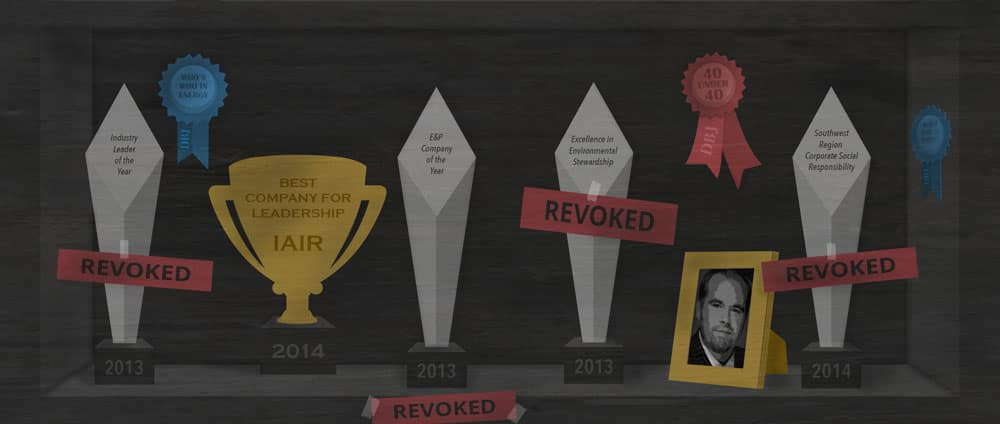
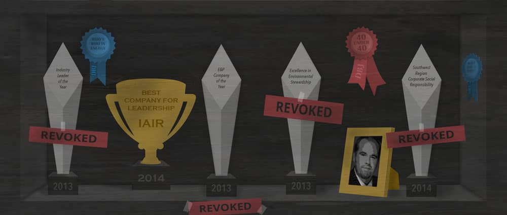
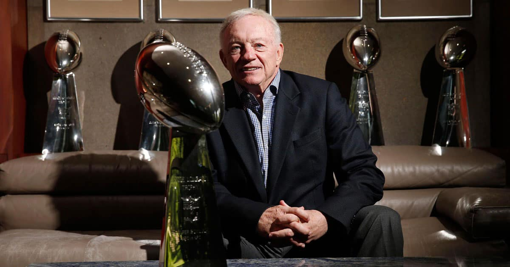

The rise of the
‘Frack Master’
How an internet startup CEO became
an expert on hydraulic fracturing
to a global audience
The rise of the ‘Frack Master’
How an internet startup CEO became an expert on hydraulic fracturing to a global audience
Chris Faulkner’s energy expertise is in question. In June, the Securities and Exchange Commission accused him and his Dallas company, Breitling Energy Corp., of misleading investors with over-inflated return estimates, faulty science and intertwined companies to keep it all lowkey. While the government’s accusations have not yet reached the courtroom, about a dozen people spoke with The Dallas Morning News about their observations of Faulkner and the lifestyle he appeared to live. Investors said Faulkner’s frequent appearances on FOX Business Network, CNN, The New York Times and this newspaper, as well as radio advertisements that aired in Houston and Dallas-Fort Worth, informed some of their decisions to invest in Breitling Energy.
Lights, camera, action
Faulkner hired a publicist to seek interviews and airtime
“Faulkner is a very intelligent guy. I have no problem saying that. This is just greed.”
— Joe Simo, the geologist accused by the SEC of providing bad science to investors
Chris Faulkner’s magazine covers and industry accolades hung from the walls of Breitling Energy’s corporate offices on Pacific Avenue in downtown Dallas. Today, those walls lay bare, the emptiness calling attention to Faulkner’s rise and potential fall from the oil and gas big leagues.
In June, the Securities and Exchange Commission said Faulkner and some of his Breitling colleagues embellished to investors the potential returns on wells they drilled. Faulkner, the government alleges, duped consumers by skewing geological projections to more easily entice investments. Federal officials filed lawsuits against the company and Faulkner in June, and the FBI seized his Bentley Continental and Aston Martin Virage in July.
Faulkner didn’t get his start in the oil business. In the 1990s, Faulkner launched C I Host, a Bedford-based internet company that provides website management solutions to companies. By the early 2000s, the company was at the center of lawsuits challenging its reputation. In one case, Microsoft sued the company for not paying fees. The dispute was later settled.
He founded Southwest Energy Exploration LLC in 2004, and changed the name to Breitling Energy in 2010.
Faulkner’s evolution is well documented. His dealings in politics and history with lawsuits have been noted by Texas publications. Private citizens have kept tabs as well. Even after unflattering exposes, Faulkner continued to be invited back to CNN, FOX Business Network, the BBC and others.
Here’s Chris Faulkner on FOX Business Network’s Stuart Varney’s show. He answers Varney’s questions about whether drilling companies can afford to operate in the economic conditions of the time.
The mechanisms Faulkner deployed to meet consumers are nothing new. Routinized hype is a 19th Century concept. Beneath the layers of marketing and advertising rest public relations specialists, professionals trained in consumer behavior and media patterns.
In 2013, Faulkner hired his publicist. It was the Ann L. Stephenson Group, based in New Jersey. Ann Stephenson, co-owner of the former group, said Faulkner and her team pursued interviews by sending news releases and emails to news outlets. Faulkner and Breitling bought radio advertisements and newspapers ads.
“He was looking for a PR group, and he was an excellent spokesman,” Stephenson said. The team was assembled.
At roundtable discussions and in on-air debates, Faulkner took the lead for the industry. He even criticized the industry’s tactics on several occasions. For someone who, according to the SEC, hadn’t any real experience in the industry, he played the part. He could be seen wearing pinstriped suits and cowboys boots. In a segment for The Weather Channel, Faulkner was on a drill site somewhere in West Texas answering questions about fracking and a recent spate of earthquakes.
“I think it’s early in the game to blame fracking or to blame the oil industry,” he said.
Faulkner was live from Austin, New York, Los Angeles, Saudia Arabia, Dallas. He predicted — quite often accurately — how the oil market would react and change. Journalists asked him to weigh in on environmental debates from Denton to Balcombe, U.K.
What stood out the most about Faulkner, reporters say, was his willingness to be quoted. The press could reach him on his cellphone.
According to a handful of investors, his appearances in news media led them to trust Breitling. John Atkins and Jim Cary, both investors, said their returns in recent months have been disappointing.
Faulkner’s reputation as an expert can be traced to the Oil and Gas Monitor, a trade publication which earned him the title of Frack Master. Faulkner had 29 bylines in the magazine. In 2012, he wrote a piece, “Oil and Gas Best Kept Secrets: Secrets of Oil and Gas Investments for the Average Individual,” which served as guide on how not to be misled by energy companies.
Faulkner suggested to Stephenson they finance a movie, “Breaking Free,” which explored the basics of hydraulic fracturing. The movie features scientists, oil and gas researchers, Texas politicians and families who said they’d benefitted from companies drilling on their land.
Stephenson said she approached Faulkner about publishing a book — “it could really set you on the top,” she recalled telling him. Faulkner agreed. “The Fracking Truth: America’s Energy Revolution: the Inside, Untold Story” serves as the Frack Master’s gospel. In it, one can find some of the same arguments he made in articles and TV news segments broadcasted around the world.
Faulkner’s nickname was used by reporters introducing him to their audiences. Richard Quest, a CNN anchor, even highlighted the significance of the title in January while doing a segment with Faulkner.
“The Frack Master,” he said, “that name will stick with you forever.”
On CNN, Richard Quest asks Chris Faulkner about how volatility in the Middle East affects Americans at the gas pump. Faulkner was routine guest of Quest’s show.
From 2012 to 2015, Breitling paid for radio advertisements on KRLD, CBS’s Dallas-Fort Worth station, called “Oil & Gas Today,” a KRLD employee said. During the slots, Faulkner pushed some of the same lines he did on TV and in his book and movie.In December, a Dallas County judge ordered Breitling to pay CBS Radion Texas Inc.$172,768 in actual damages after the company failed to pay the station for the ads.
Faulkner co-hosted a radio show called Powering America. According to Breitling’s website, the show ran on Business 1110 KTEK. According to Salem Media Group’s website, however, the show ran on News Talk 1070 AM KNTH Houston. Multiple calls to Salem Media Group trying to clear up the discrepancy went unanswered until Chuck Jewell, a general manager at Salem, returned calls to decline comment. He deferred questions to the company’s lawyers. Stephenson said she was not the only person sharing the word about the Frack Master.
George McQuade is the director of global marketing and public relations for Mayo Communications, a marketing company he said his wife owns. The firm, according to its website, did work for Breitling Energy. And C I Host is listed as a client.
McQuade is also a journalist who has written pieces about Faulkner’s book, movie and arguments in the press.
“Breitling Energy has become a national voice for responsible American energy development and is recognized as an energy industry leader for effectively communicating its message,” Mr. McQuade writes.
Reached over the phone, McQuade said he was unclear when he was working for Faulkner as a marketer and when he wrote about him as a journalist.
He did, however, say Faulkner was a client until March 2015. Datelines on McQuade’s Examiner stories about Faulkner’s public reputation are marked April 2015.
“It could have been during or after,” McQuade said. He declined to comment further.
Chris Faulkner debates with Ewa Jasiewicz about hydraulic fracturing on Channel 4 News, based in London. Faulkner frequently clashed with activists and energy companies about the drilling technique.
Mr. Faulkner did not comment for this article, but some of the people who worked with and for him described him as a nice guy. He’d always remember your name. The company Christmas parties were nights to remember; gold-painted women and dwarves entertained the Breitling staff.
After reading an article in The News about the SEC’s allegations, Joe Simo, the geologist who allegedly fudged the numbers, commented on the post, defending himself. He even left his phone number for reporters to follow. In his office, he opened up. He shared everything. He didn’t hesitate to answer questions. Simo remembered “hundreds” of plaques honoring Faulkner inside the company’s headquarters.
"Faulkner is a very intelligent guy,” he said. “I have no problem saying that. This is just greed.”
Making 'experts'
What consumers should know about the news
“We throw the word ‘expert’ around pretty easily because we want our stories to carry more weight. It’s really incumbent on the media to do these checks as well, to make sure [we’re] not contributing to somebody else building themselves.”
— Mark Horvit, the director of Investigative Reporters and Editors
Chris Faulkner’s magazine covers and industry accolades hung from the walls of Breitling Energy’s corporate offices on Pacific Avenue in downtown Dallas. Today, those walls lay bare, the emptiness calling attention to Faulkner’s rise and potential fall from the oil and gas big leagues.
In June, the Securities and Exchange Commission said Faulkner and some of his Breitling colleagues embellished to investors the potential returns on wells they drilled. Faulkner, the government alleges, duped consumers by skewing geological projections to more easily entice investments. Federal officials filed lawsuits against the company and Faulkner in June, and the FBI seized his Bentley Continental and Aston Martin Virage in July.
Faulkner didn’t get his start in the oil business. In the 1990s, Faulkner launched C I Host, a Bedford-based internet company that provides website management solutions to companies. By the early 2000s, the company was at the center of lawsuits challenging its reputation. In one case, Microsoft sued the company for not paying fees. The dispute was later settled.
He founded Southwest Energy Exploration LLC in 2004, and changed the name to Breitling Energy in 2010.
Faulkner’s evolution is well documented. His dealings in politics and history with lawsuits have been noted by Texas publications. Private citizens have kept tabs as well. Even after unflattering exposes, Faulkner continued to be invited back to CNN, FOX Business Network, the BBC and others.
The mechanisms Faulkner deployed to meet consumers are nothing new. Routinized hype is a 19th Century concept. Beneath the layers of marketing and advertising rest public relations specialists, professionals trained in consumer behavior and media patterns.
In 2013, Faulkner hired his publicist. It was the Ann L. Stephenson Group, based in New Jersey. Ann Stephenson, co-owner of the former group, said Faulkner and her team pursued interviews by sending news releases and emails to news outlets. Faulkner and Breitling bought radio advertisements and newspapers ads.
“He was looking for a PR group, and he was an excellent spokesman,” Stephenson said. The team was assembled.
At roundtable discussions and in on-air debates, Faulkner took the lead for the industry. He even criticized the industry’s tactics on several occasions. For someone who, according to the SEC, hadn’t any real experience in the industry, he played the part. He could be seen wearing pinstriped suits and cowboys boots. In a segment for The Weather Channel, Faulkner was on a drill site somewhere in West Texas answering questions about fracking and a recent spate of earthquakes.
“I think it’s early in the game to blame fracking or to blame the oil industry,” he said.
Faulkner was live from Austin, New York, Los Angeles, Saudia Arabia, Dallas. He predicted — quite often accurately — how the oil market would react and change. Journalists asked him to weigh in on environmental debates from Denton to Balcombe, U.K.
What stood out the most about Faulkner, reporters say, was his willingness to be quoted. The press could reach him on his cellphone.
According to a handful of investors, his appearances in news media led them to trust Breitling. John Atkins and Jim Cary, both investors,said their returns in recent months have been disappointing.
Faulkner’s reputation as an expert can be traced to the Oil and Gas Monitor, a trade publication which earned him the title of Frack Master. Faulkner had 29 bylines in the magazine. In 2012, he wrote a piece, “Oil and Gas Best Kept Secrets: Secrets of Oil and Gas Investments for the Average Individual,” which served as guide on how not to be misled by energy companies.
Faulkner suggested to Stephenson they finance a movie, “Breaking Free,” which explored the basics of hydraulic fracturing. The movie features scientists, oil and gas researchers, Texas politicians and families who said they’d benefitted from companies drilling on their land.
Stephenson said she approached Faulkner about publishing a book — “it could really set you on the top,” she recalled telling him. Faulkner agreed. “The Fracking Truth: America’s Energy Revolution: the Inside, Untold Story” serves as the Frack Master’s gospel. In it, one can find some of the same arguments he made in articles and TV news segments broadcasted around the world.
Faulkner’s nickname was used by reporters introducing him to their audiences. Richard Quest, a CNN anchor, even highlighted the significance of the title in January while doing a segment with Faulkner.
“The Frack Master,” he said, “that name will stick with you forever.”
From 2012 to 2015, Breitling paid for radio advertisements on KRLD, CBS’s Dallas-Fort Worth station, called “Oil & Gas Today,” a KRLD employee said. During the slots, Faulkner pushed some of the same lines he did on TV and in his book and movie.In December, a Dallas County judge ordered Breitling to pay CBS Radion Texas Inc.$172,768 in actual damages after the company failed to pay the station for the ads.
Faulkner co-hosted a radio show called Powering America. According to Breitling’s website, the show ran on Business 1110 KTEK. According to Salem Media Group’s website, however, the show ran on News Talk 1070 AM KNTH Houston. Multiple calls to Salem Media Group trying to clear up the discrepancy went unanswered until Chuck Jewell, a general manager at Salem, returned calls to decline comment. He deferred questions to the company’s lawyers. Stephenson said she was not the only person sharing the word about the Frack Master.
Faulkner's free media
Below is the $241,752 of media attention (free media) Faulkner received since 2012. Free media is an indication of how often a brand was circulating in mass media without paying for it. (Source: Mediaquant)
George McQuade is the director of global marketing and public relations for Mayo Communications, a marketing company he said his wife owns. The firm, according to its website, did work for Breitling Energy. And C I Host is listed as a client.
McQuade is also a journalist who has written pieces about Faulkner’s book, movie and arguments in the press.
“Breitling Energy has become a national voice for responsible American energy development and is recognized as an energy industry leader for effectively communicating its message,” Mr. McQuade writes.
Reached over the phone, McQuade said he was unclear when he was working for Faulkner as a marketer and when he wrote about him as a journalist.
He did, however, say Faulkner was a client until March 2015. Datelines on McQuade’s Examiner stories about Faulkner’s public reputation are marked April 2015.
“It could have been during or after,” McQuade said. He declined to comment further.
Mr. Faulkner did not comment for this article, but some of the people who worked with and for him described him as a nice guy. He’d always remember your name. The company Christmas parties were nights to remember; gold-painted women and dwarves entertained the Breitling staff.
After reading an article in The News about the SEC’s allegations, Joe Simo, the geologist who allegedly fudged the numbers, commented on the post, defending himself. He even left his phone number for reporters to follow. In his office, he opened up. He shared everything. He didn’t hesitate to answer questions. Simo remembered “hundreds” of plaques honoring Faulkner inside the company’s headquarters.
“Faulkner is a very intelligent guy,” he said. “I have no problem saying that. This is just greed.”
The fracking debate
Inside the politics, environmental concerns and technology of fracking
“It was the media who embraced him. I found that rather irritating, because there are people out there who they can contact who are legitimately experts.”
— Sharon Wilson, who blogged about Faulkner
Chris Faulkner’s magazine covers and industry accolades hung from the walls of Breitling Energy’s corporate offices on Pacific Avenue in downtown Dallas. Today, those walls lay bare, the emptiness calling attention to Faulkner’s rise and potential fall from the oil and gas big leagues.
In June, the Securities and Exchange Commission said Faulkner and some of his Breitling colleagues embellished to investors the potential returns on wells they drilled. Faulkner, the government alleges, duped consumers by skewing geological projections to more easily entice investments. Federal officials filed lawsuits against the company and Faulkner in June, and the FBI seized his Bentley Continental and Aston Martin Virage in July.
Faulkner didn’t get his start in the oil business. In the 1990s, Faulkner launched C I Host, a Bedford-based internet company that provides website management solutions to companies. By the early 2000s, the company was at the center of lawsuits challenging its reputation. In one case, Microsoft sued the company for not paying fees. The dispute was later settled.
He founded Southwest Energy Exploration LLC in 2004, and changed the name to Breitling Energy in 2010.
Faulkner’s evolution is well documented. His dealings in politics and history with lawsuits have been noted by Texas publications. Private citizens have kept tabs as well. Even after unflattering exposes, Faulkner continued to be invited back to CNN, FOX Business Network, the BBC and others.
The mechanisms Faulkner deployed to meet consumers are nothing new. Routinized hype is a 19th Century concept. Beneath the layers of marketing and advertising rest public relations specialists, professionals trained in consumer behavior and media patterns.
In 2013, Faulkner hired his publicist. It was the Ann L. Stephenson Group, based in New Jersey. Ann Stephenson, co-owner of the former group, said Faulkner and her team pursued interviews by sending news releases and emails to news outlets. Faulkner and Breitling bought radio advertisements and newspapers ads.
“He was looking for a PR group, and he was an excellent spokesman,” Stephenson said. The team was assembled.
At roundtable discussions and in on-air debates, Faulkner took the lead for the industry. He even criticized the industry’s tactics on several occasions. For someone who, according to the SEC, hadn’t any real experience in the industry, he played the part. He could be seen wearing pinstriped suits and cowboys boots. In a segment for The Weather Channel, Faulkner was on a drill site somewhere in West Texas answering questions about fracking and a recent spate of earthquakes.
“I think it’s early in the game to blame fracking or to blame the oil industry,” he said.
Permian vs Bakken
The break-even amounts of shale plays in the Permian Basin, in West Texas, and the Bakken, in North Dakota (Source: JP Morgan Chase)
-
Permian
-
Bakken
Faulkner was live from Austin, New York, Los Angeles, Saudia Arabia, Dallas. He predicted — quite often accurately — how the oil market would react and change. Journalists asked him to weigh in on environmental debates from Denton to Balcombe, U.K.
What stood out the most about Faulkner, reporters say, was his willingness to be quoted. The press could reach him on his cellphone.
According to a handful of investors, his appearances in news media led them to trust Breitling. John Atkins and Jim Cary, both investors,said their returns in recent months have been disappointing.
Faulkner’s reputation as an expert can be traced to the Oil and Gas Monitor, a trade publication which earned him the title of Frack Master. Faulkner had 29 bylines in the magazine. In 2012, he wrote a piece, “Oil and Gas Best Kept Secrets: Secrets of Oil and Gas Investments for the Average Individual,” which served as guide on how not to be misled by energy companies.
Faulkner suggested to Stephenson they finance a movie, “Breaking Free,” which explored the basics of hydraulic fracturing. The movie features scientists, oil and gas researchers, Texas politicians and families who said they’d benefitted from companies drilling on their land.
Stephenson said she approached Faulkner about publishing a book — “it could really set you on the top,” she recalled telling him. Faulkner agreed. “The Fracking Truth: America’s Energy Revolution: the Inside, Untold Story” serves as the Frack Master’s gospel. In it, one can find some of the same arguments he made in articles and TV news segments broadcasted around the world.
Faulkner’s nickname was used by reporters introducing him to their audiences. Richard Quest, a CNN anchor, even highlighted the significance of the title in January while doing a segment with Faulkner.
“The Frack Master,” he said, “that name will stick with you forever.”
From 2012 to 2015, Breitling paid for radio advertisements on KRLD, CBS’s Dallas-Fort Worth station, called “Oil & Gas Today,” a KRLD employee said. During the slots, Faulkner pushed some of the same lines he did on TV and in his book and movie.In December, a Dallas County judge ordered Breitling to pay CBS Radion Texas Inc.$172,768 in actual damages after the company failed to pay the station for the ads.
Faulkner co-hosted a radio show called Powering America. According to Breitling’s website, the show ran on Business 1110 KTEK. According to Salem Media Group’s website, however, the show ran on News Talk 1070 AM KNTH Houston. Multiple calls to Salem Media Group trying to clear up the discrepancy went unanswered until Chuck Jewell, a general manager at Salem, returned calls to decline comment. He deferred questions to the company’s lawyers. Stephenson said she was not the only person sharing the word about the Frack Master.
George McQuade is the director of global marketing and public relations for Mayo Communications, a marketing company he said his wife owns. The firm, according to its website, did work for Breitling Energy. And C I Host is listed as a client.
McQuade is also a journalist who has written pieces about Faulkner’s book, movie and arguments in the press.
“Breitling Energy has become a national voice for responsible American energy development and is recognized as an energy industry leader for effectively communicating its message,” Mr. McQuade writes.
Reached over the phone, McQuade said he was unclear when he was working for Faulkner as a marketer and when he wrote about him as a journalist.
He did, however, say Faulkner was a client until March 2015. Datelines on McQuade’s Examiner stories about Faulkner’s public reputation are marked April 2015.
“It could have been during or after,” McQuade said. He declined to comment further.
Mr. Faulkner did not comment for this article, but some of the people who worked with and for him described him as a nice guy. He’d always remember your name. The company Christmas parties were nights to remember; gold-painted women and dwarves entertained the Breitling staff.
After reading an article in The News about the SEC’s allegations, Joe Simo, the geologist who allegedly fudged the numbers, commented on the post, defending himself. He even left his phone number for reporters to follow. In his office, he opened up. He shared everything. He didn’t hesitate to answer questions. Simo remembered “hundreds” of plaques honoring Faulkner inside the company’s headquarters.
“Faulkner is a very intelligent guy,” he said. “I have no problem saying that. This is just greed.”
Advertisement
Author: Dalton LaFerney
Illustration, graphics and design: Kristi Walker
More from The Dallas Morning News
Trappings of legend
Getting an exclusive look inside Jerry Jones’ office is a journey through Cowboys’ history.

Highest-paid CEOs in Dallas-Fort Worth
Their median pay package totaled $4.07 million last year.
The buck starts here
Peek inside the Cowtown factory that's set to print over $160 billion this fiscal year.